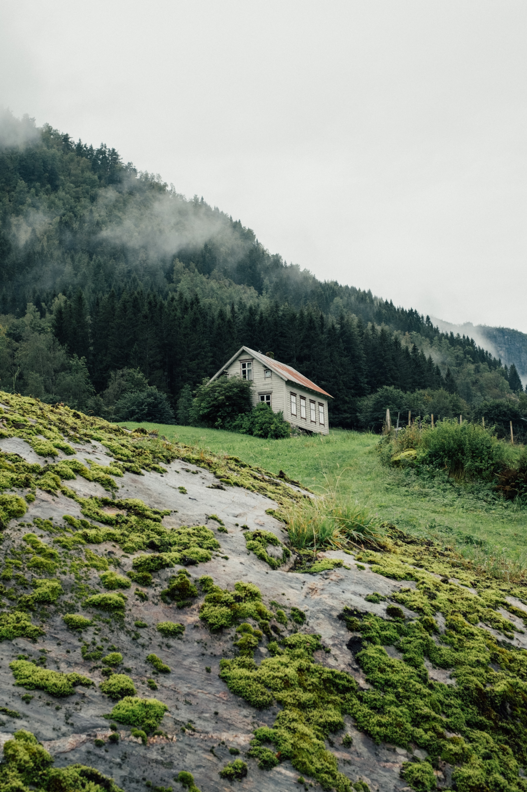
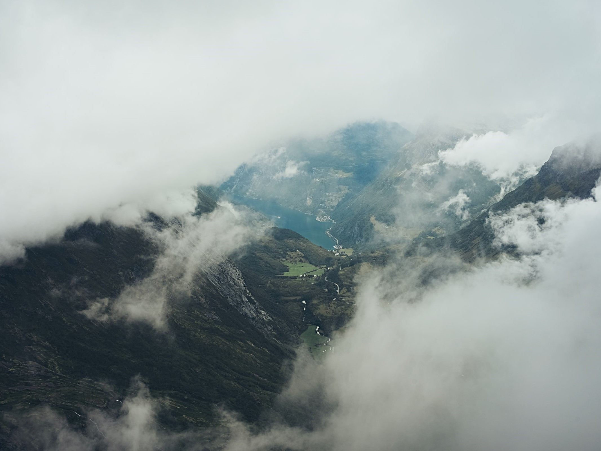
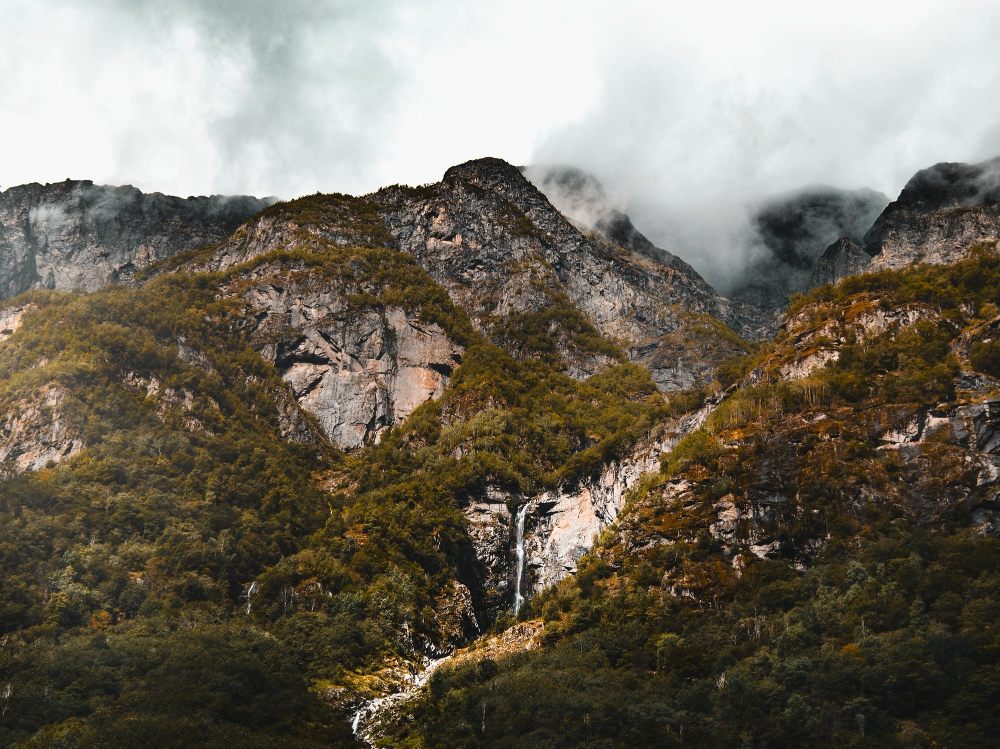
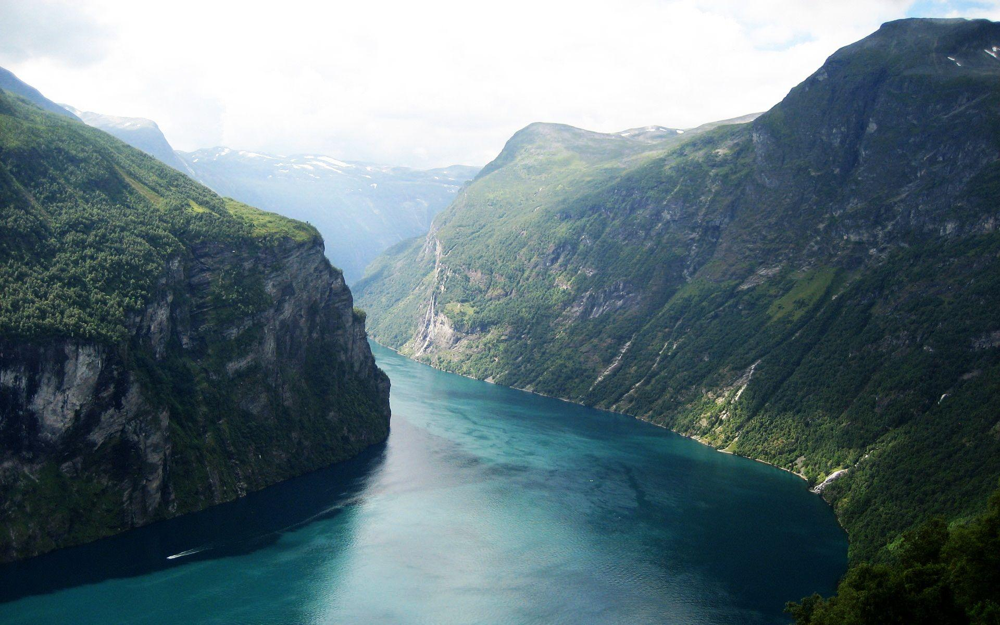
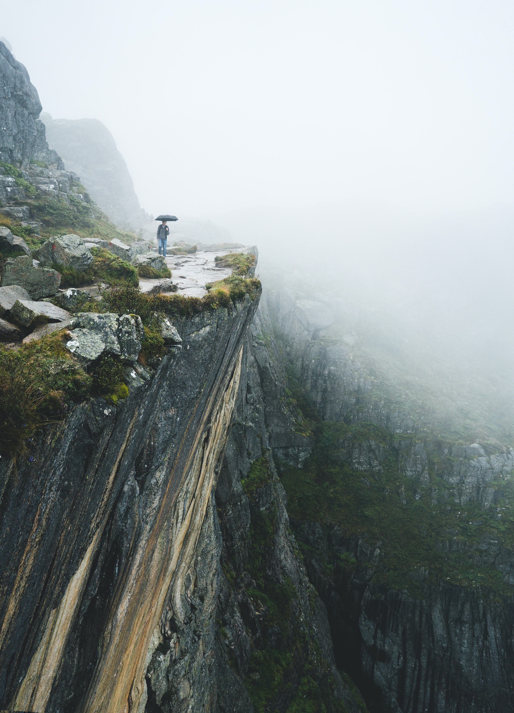
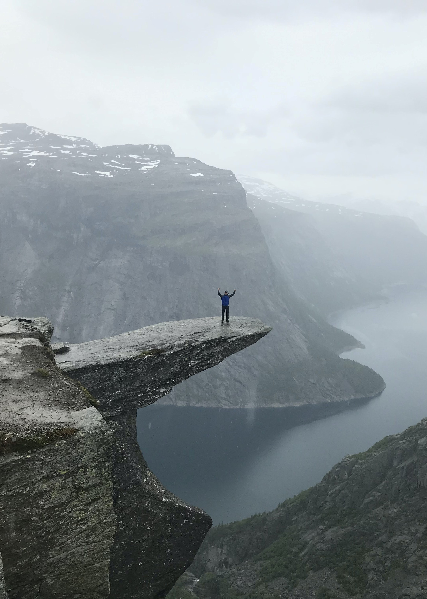
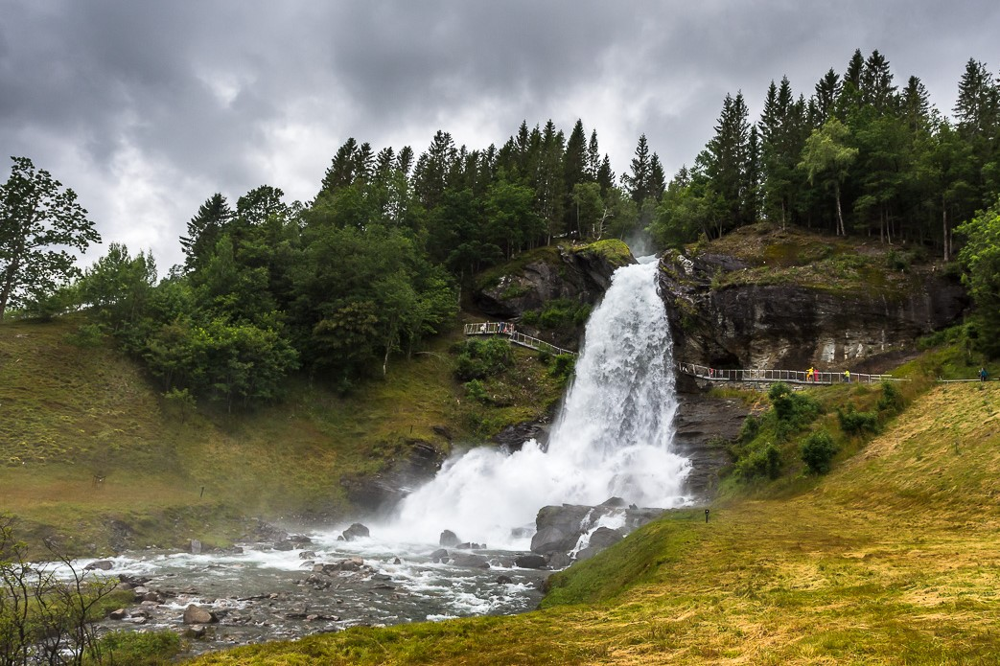
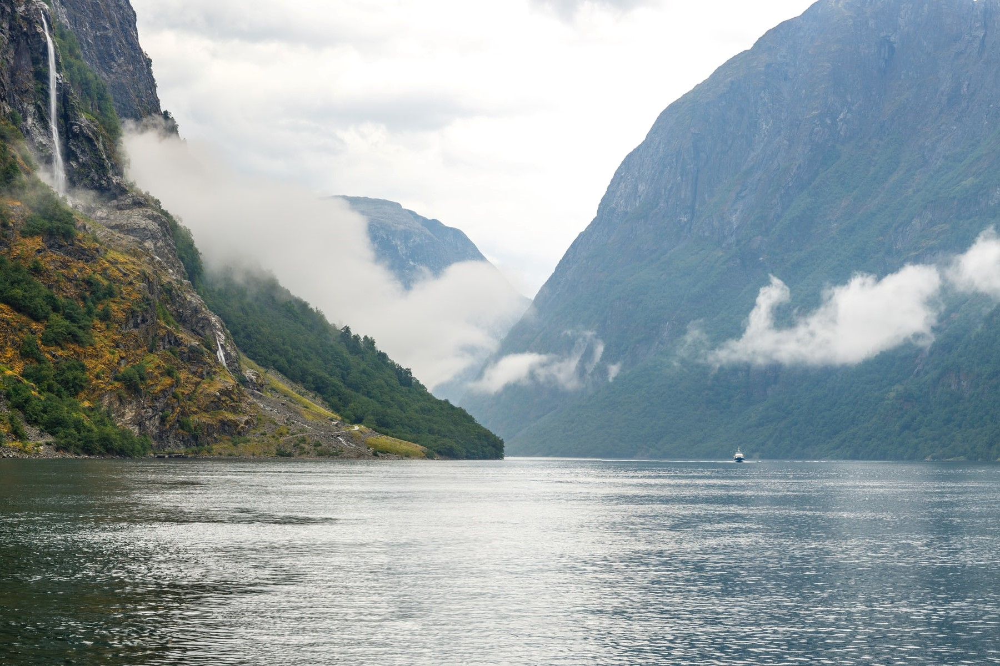

Засніжені гірські вершини. Північне сяйво. Блискучі фіорди. Це Норвегія.

Королівство Норвегія знаходиться в Північній Європі - одна з 4 скандинавських країн,
які розташовані на північних просторах Європи. На востоке вона межує з Швецією,
Фінляндія та Росія, на западі омивається Норвезьким морем та Атлантичним океаном,
на севере - Баренцевим морем, а на юге - Північним морем. Норвегія - витянута і узкая країна,
більш 30% території якої покрито лесами, множеством реку та озера. Более половины площади
країни занято горними массивами.
NATURE
Природа Норвегії - це мир, повністю сформований суровим північним кліматом, північним
морями і горами, лише не охоплюючи цю невелику скандинавську страну.
Більше 1/3 держави розподілено за Полярним кругом. Только тёплое течение Гольфстрима
значно зменшує норвезькі зими, створюючи унікальні умови для зимового туризму
і розвиток зимових видів спорту. Цепь гор, розділяюча матеріальна Норвегія, спасає
восток країни від звичайних осадків, приносимих з моря.

Climate
На западі Норвегії преобладает м'який морський клімат, в центрі - континентальний, а на крайньому севері - субарктичний. Лучшее время для поездки в Норвегии - лето, з червня по серпень. Температури прохладних вдоль побережжя і в гірських районах, а також холодні вдихи північного побережжя.

Animals
У житті світу Норвегії - представники лесних та тундрових видів.
В тундрах севера водятся північні олени, леммінги - норвезькі миші,
білі та голубі пісні. У лесах обитають благородні олени, лоси,
куницы и рыси, ласки и горностаи, бобры, бурундуки, белки.
Повсеместно - лісиці та зайці.

Plants
Захід Норвегії - це трав'яні та кустарні товариства, переважно з черників, верески та брусники, таєжні ліси. Юг - дубові і букові ліси. Лес займається 24% всієї території держави. Леса формують в основному соси, елі та берзози, які здатні расти на висоті до 300 м над вами.
Гейрангерфьорден

Якщо ви шукаєте пару воланів, якщо ви шукаєте глазуровані, це колюча прерія.
Це не велика справа, але це велика справа. Ця лінія покриває 20 км,
але він не може передумати. Оцініть усі можливості доступності
У Норвегії, найпопулярнішій туристичній визначній пам'ятці у світі, існує дуже глобальний, темношкірий код Морзе.
можна використовувати як ваги. Якщо ваш душ відкритий, вам може знадобитися склянка,
орендуйте купальник, спробуйте сплавити. Це також важке становище предмета і
час в останній час можуть займати ящірки.

Прекестулен
Не знаєте, що подивитися в Норвегії? Постарайтеся потрапити на скелю Прекестулен,
яка вважається найзнаменитішою пам'яткою регіону Рюфюльке.
Над морською затокою Люсі зі скелястими берегами вона підноситься на цілих 604 м, а
площа гірського плато досягає 600 м2. Відповідно до припущень археологів, його
освіту датується 10-ма тисячами років тому. Не знаєте, куди сходити в Норвегії?
На машині або автобусі можна дістатися до будинку Прекестулен, де туристам пропонується
можливість поїсти, переночувати. Відмінний вид на скелю ще відкривається з екскурсійного
корабля, а також автомобільного порома.

Язик Троля
Цікавим для справжніх екстремалів і витривалих людей є
горизонтальний виступ на скелі під назвою Скьеггедаль. Підноситься
вона на висоті 350 м над рівнем озера Рінгедалсватн. У всій країні
це місце заслужено вважається найкрасивішим (та що вже говорити,
"Мова Троля" вважається одним з найкрасивіших місць взагалі
на планеті), але і найнебезпечнішим. У Мережі можна побачити
безліч цікавих фото з височини, від деяких створюється відчуття
того, що людина знаходиться на краю світу.

Стейнсдальсфосс
У північній частині Норвегії є археологічний музей, а саме в провінції
Фіннмарк. Навколо міста Альта на деяких дільницях було знайдено більш ніж 5
тисяч наскальних малюнків. У наші дні ця місцевість є музеєм під
відкритим небом, що дійсно варто подивитися в Норвегії. Це не
єдиний пам'ятник з петрогліфами кам'яного віку. Що стосується наскальних
малюнків в Альті, їх зміст достеменно ніхто не знає. Нам залишається тільки
здогадуватися про те, що означають зображені сцени.

Нерёй-фьорд
У північній частині Норвегії є археологічний музей, а саме в провінції
Фіннмарк. Навколо міста Альта на деяких дільницях було знайдено більш ніж 5
тисяч наскальних малюнків. У наші дні ця місцевість є музеєм під
відкритим небом, що дійсно варто подивитися в Норвегії. Це не
єдиний пам'ятник з петрогліфами кам'яного віку. Що стосується наскальних
малюнків в Альті, їх зміст достеменно ніхто не знає. Нам залишається тільки
здогадуватися про те, що означають зображені сцени.